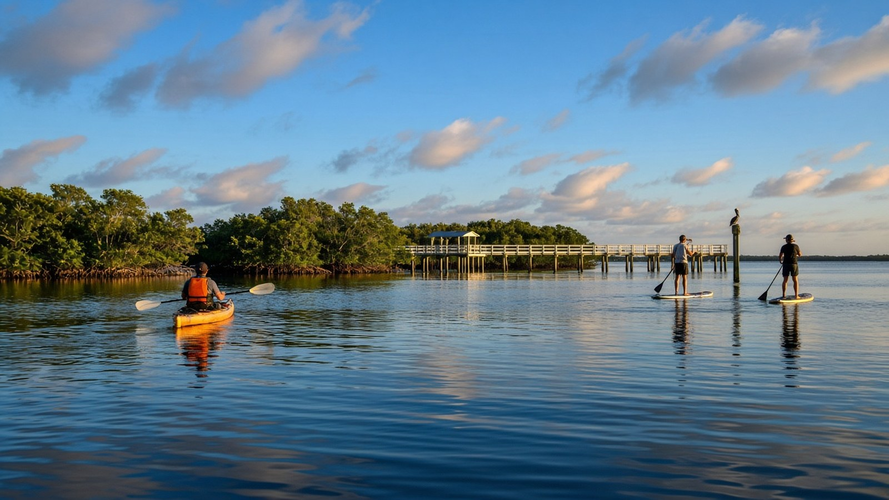

Things to Do in Punta Gorda, FL

Punta Gorda & Charlotte County, FL
Quick Answer
Most of the best things to do in Punta Gorda are on the water.
Start with the 2.5-mile Harborwalk on Charlotte Harbor, which links Laishley Park, Gilchrist Park, and Fishermen's Village. Then add the town's 31 murals, the wildlife center at Ponce de Leon Park, Alligator Creek Preserve, and a swamp-buggy tour at Babcock Ranch.
If you are searching for things to do in Punta Gorda, here is how we would plan a day, with the sources so you can check hours before you go.
Start on the Harborwalk
The City of Punta Gorda describes the Harborwalk as a 2.5-mile waterfront path along Charlotte Harbor that connects Laishley Park and Gilchrist Park with shops, dining, historical sites, and Fishermen's Village. It is the easiest way to see the city, because everything else in downtown is within a short walk or ride of it.
Gilchrist Park has about 11 waterfront acres with a playground, courts, a fishing pier, pavilions, and harbor views, according to the Punta Gorda Chamber of Commerce. Laishley Park has a 400-foot fishing pier, a marina, an interactive fountain, Veterans Park, and walking paths, per the city. Fishermen's Village is a waterfront shopping and dining destination with a marina that offers charter fishing, cruises, and rentals. Hours and tenants change, so check before you go.
A few facts to plan around
These are the places and numbers most visitors ask about. They come from the city, the county, the chamber, and the airport.
| Punta Gorda: Plan Your Visit | ||
|---|---|---|
| Topic | Figure | How to read it |
| Harborwalk | 2.5 miles | City of Punta Gorda. A waterfront path along Charlotte Harbor connecting Laishley Park, Gilchrist Park, and Fishermen's Village. |
| Historic murals | 31 | The Punta Gorda Historic Mural Society has created 31 murals around town, with a self-guided tour map and audio tour published by the society. |
| Peace River Wildlife Center | Free, donation supported | At 3400 Ponce de Leon Parkway, a wildlife rehabilitation and education center with resident birds, reptiles, and small mammals. Listed hours are 11 a.m. to 4 p.m. daily, but confirm before you go. |
| Ponce de Leon Park | Beach, pier, boardwalk | City park with a beach, fishing pier, boat ramp, mangrove boardwalk, playground, and the wildlife center. |
| Alligator Creek Preserve | 4+ miles of trails | Charlotte Harbor Environmental Center preserve with trails through pine flatwoods and salt marsh, open dawn to dusk per Florida Hikes. |
| Babcock Ranch Eco-Tours | 90-minute swamp-buggy tours | Narrated tours through cypress swamp and working-ranch landscapes, with advance booking recommended, per the visitor bureau's activity guide. |
| Cape Haze Pioneer Trail | About 8.5 miles | A multi-use trail on the Cape Haze peninsula along a former railway easement, managed by Charlotte County Community Services. |
| Punta Gorda Airport | 2,282,002 passengers in 2025 | A record, up 18.5 percent from 2024. Allegiant is the primary carrier, with nonstop service to more than 50 destinations. |
Sources: City of Punta Gorda; Punta Gorda Chamber of Commerce; Punta Gorda Historic Mural Society; Charlotte County; Visit Charlotte Harbor; Punta Gorda Airport. Hours, tours, and prices change, so confirm them before you plan around them.
Key Takeaways
- The Harborwalk is a 2.5-mile waterfront path that connects Laishley Park, Gilchrist Park, and Fishermen's Village.
- Punta Gorda has 31 murals created by the Punta Gorda Historic Mural Society, with a self-guided tour map.
- Ponce de Leon Park has a beach, fishing pier, boat ramp, mangrove boardwalk, playground, and the Peace River Wildlife Center, which is free and donation supported.
- Alligator Creek Preserve has more than four miles of trails, and Babcock Ranch offers 90-minute narrated swamp-buggy tours. Book tours ahead.
- The Cape Haze Pioneer Trail is about 8.5 miles long and runs along a former railway easement on the Cape Haze peninsula.
- Punta Gorda Airport served a record 2,282,002 passengers in 2025, which makes the area easy to reach by air.
Downtown, murals, and the Historic District
Downtown Punta Gorda is compact and walkable. The Punta Gorda Historic Mural Society has created 31 murals across town, and the society publishes a map for a self-guided tour. A slow loop through downtown with the map is a good first-day activity, and it takes you past the streets of the Historic District, where many buyers who want to walk to the harbor look at homes.
Parks, wildlife, and trails
Ponce de Leon Park pairs a beach, a fishing pier, a boat ramp, and a mangrove boardwalk with the Peace River Wildlife Center, a free, donation-supported rehabilitation and education center. For a longer walk, Alligator Creek Preserve has more than four miles of trails through pine flatwoods and salt marsh. The Charlotte Harbor Environmental Center runs it, and the listed visitor-center hours are limited, so check before you go.
Cyclists and walkers can add the Cape Haze Pioneer Trail, about 8.5 miles along the former Charlotte Harbor and Northern Railway easement. The county says its first phase opened on November 20, 1999. It is a short drive from Punta Gorda on the Cape Haze peninsula, near Rotonda West and South Gulf Cove.
On the water
Charlotte Harbor is the main attraction, and you do not need a boat. Fishing piers at Gilchrist Park, Laishley Park, and Ponce de Leon Park give you water access on foot. Fishermen's Village has a marina with charter fishing, cruises, and rentals. If you are curious about owning a boat here, our guides to Punta Gorda Isles and waterfront homes explain how the canals and seawalls work, and the city's figures are about 45 miles of canals in Punta Gorda Isles and 9 in Burnt Store Isles.
Day trips and nearby
Babcock Ranch Eco-Tours offers narrated 90-minute swamp-buggy tours through cypress swamp and working-ranch ecosystems, according to the visitor bureau's activity guide, and advance booking is recommended. Nearby Port Charlotte has Port Charlotte Beach Park, a county bayfront park with a beach, fishing pier, boat ramp, pool, courts, and rental pavilions. Gulf beaches such as Englewood Beach are a longer drive, so plan around traffic.
If you are thinking about more than a visit
Many Punta Gorda buyers start as visitors. If that is you, plan one visit in winter and one in late summer. NOAA's 1991-2020 normals put Punta Gorda's January average high at 75.3 degrees and its July average high at 92.5 degrees, and about 33 of the 52.97 annual inches of rain fall from June through September. Read our answer to is Punta Gorda a good place to live for the tradeoffs, and see our Punta Gorda real estate guide when you are ready to look at neighborhoods.
The Helgemo Team's office is at 320 Cross Street in Punta Gorda, and the team can show you different parts of town on the same trip. See our buyers page for how that works, or browse current featured listings.
Frequently asked questions
What is the best thing to do in Punta Gorda?
Walk the Harborwalk. The city describes it as a 2.5-mile waterfront path along Charlotte Harbor that connects Laishley Park, Gilchrist Park, and Fishermen's Village, so one walk covers the main downtown waterfront.
How many murals are in Punta Gorda?
The Punta Gorda Historic Mural Society has created 31 murals around town and publishes a map for a self-guided tour.
Is the Peace River Wildlife Center free?
It is described as free and donation supported. It is at 3400 Ponce de Leon Parkway, and its listed hours are 11 a.m. to 4 p.m. daily. Confirm hours before you go.
Are there beaches in Punta Gorda?
Ponce de Leon Park has a beach on Charlotte Harbor, and Port Charlotte Beach Park, a county park, has a bayfront beach. Gulf beaches are farther away, so check drive times.
Where can I hike near Punta Gorda?
Alligator Creek Preserve has more than four miles of trails through pine flatwoods and salt marsh, and the Cape Haze Pioneer Trail is about 8.5 miles along a former railway easement.
How do I get to Punta Gorda?
Punta Gorda Airport served a record 2,282,002 passengers in 2025. Allegiant is the primary carrier, with nonstop service to more than 50 destinations. Interstate 75 also runs through the county.
When is the best time to visit Punta Gorda?
Winters are mild and summers are hot and wet. NOAA's normals show a January average high of 75.3 degrees and a July average high of 92.5 degrees, with most of the 52.97 annual inches of rain from June through September.
Talk with The Helgemo Team
If your visit turns into a move, talk with a team that lives in Punta Gorda and can show you the neighborhoods on the same trip. Call or text The Helgemo Team at (941) 770-2275, or visit the contact page. The office is at 320 Cross Street, Punta Gorda, Florida 33950. You can also meet Brian Helgemo or read more about the team.
Related Reading
- Is Punta Gorda a good place to live?
- Living in Punta Gorda Isles
- Buying a waterfront home in Punta Gorda
- Port Charlotte real estate, explained
- A Local Guide to Punta Gorda Real Estate
Thinking About Buying or Selling?
If you are visiting, buying, or just trying to understand Punta Gorda, talk with a team that lives and works here. Call or text The Helgemo Team at (941) 770-2275.
Sources: City of Punta Gorda, Harborwalk; Punta Gorda Chamber of Commerce, Things To Do and Places To Go; The Murals of Punta Gorda, self-guided tour map; Fishermen's Village, dining and marina; Visit Charlotte Harbor, Activity Ideas; Florida Hikes, Alligator Creek Preserve; Charlotte County, Cape Haze Pioneer Trail brochure; Charlotte County, Port Charlotte Beach Park; Punta Gorda Airport, 2025 passenger traffic; NOAA National Weather Service Tampa Bay, Punta Gorda monthly and annual normals (1991-2020); City of Punta Gorda, Canals. Hours, tours, and prices change, so confirm them with each venue before you go. Data and sources reviewed November 10, 2026.